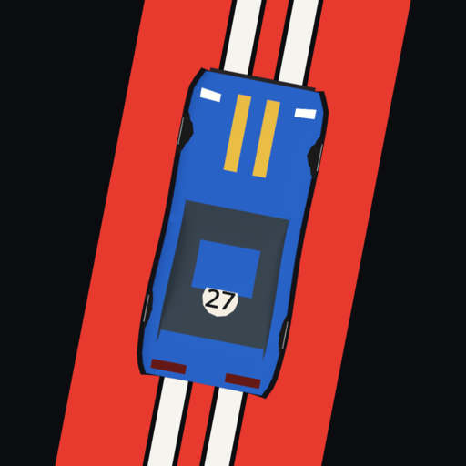
Car Game
A top-down racing game for your phone, held upright. The car handles the throttle: you steer, with your thumb anywhere on the screen. Twenty-nine cars from karts to single-seaters, twenty-five circuits around the world, and six championships to win.
Un jeu de course vu de haut, pour le téléphone tenu droit. La voiture gère l'accélérateur : tu diriges, le pouce n'importe où sur l'écran. Vingt-neuf voitures du kart aux monoplaces, vingt-cinq circuits autour du monde, et six championnats à gagner.
- Free
- Gratuit
- Optional reward videos
- Vidéos récompensées facultatives
- No account
- Sans compte
- Plays offline
- Hors ligne
- English · Français
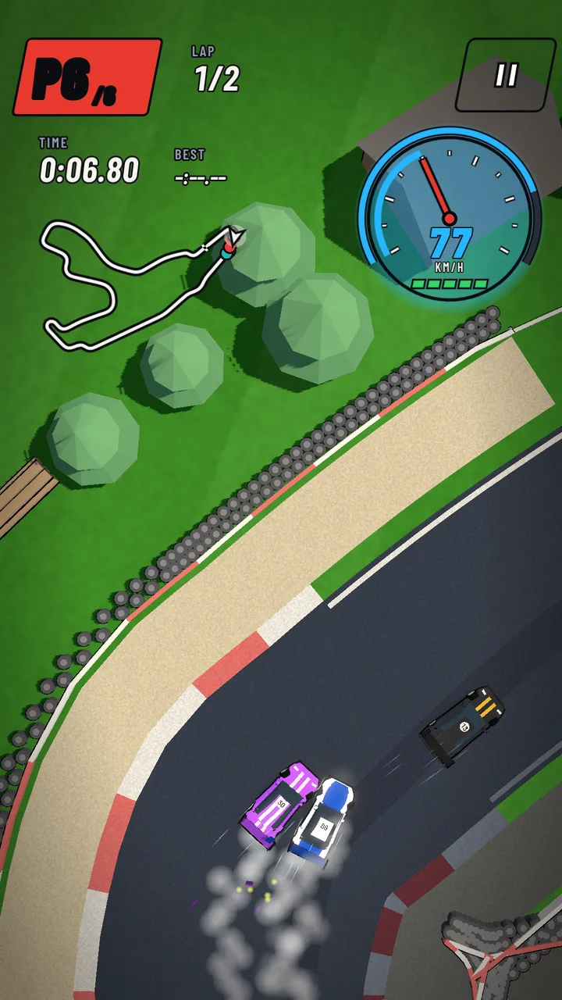
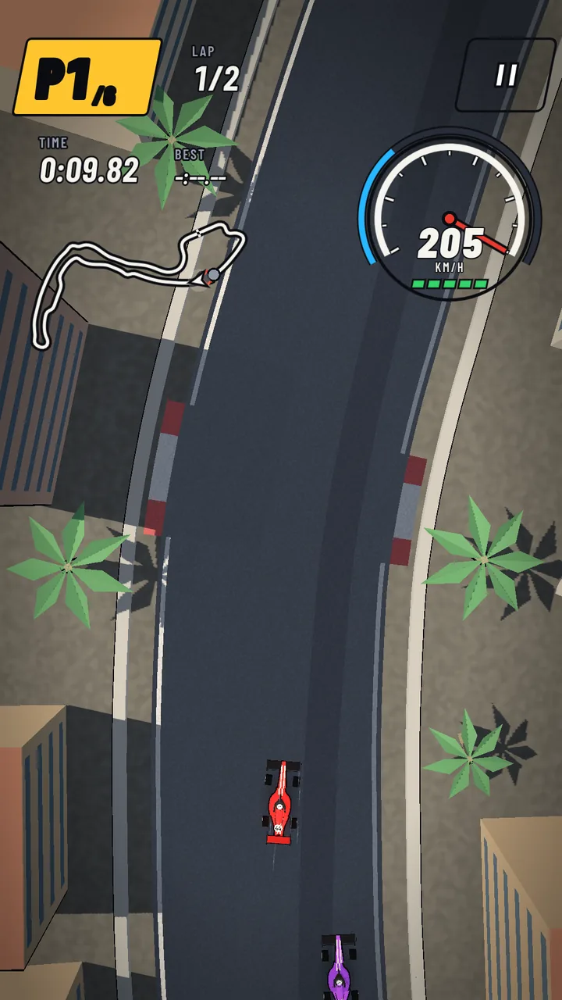
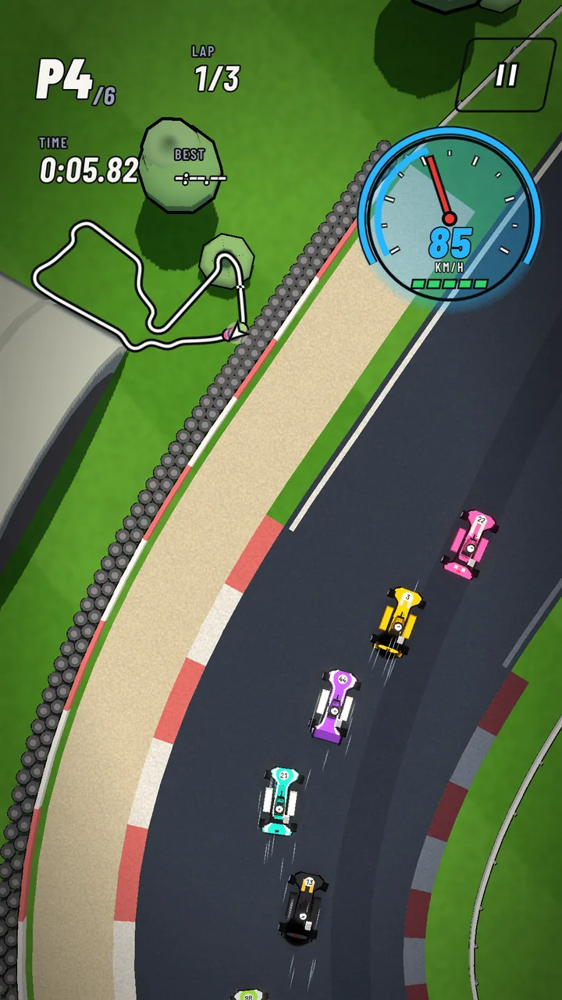
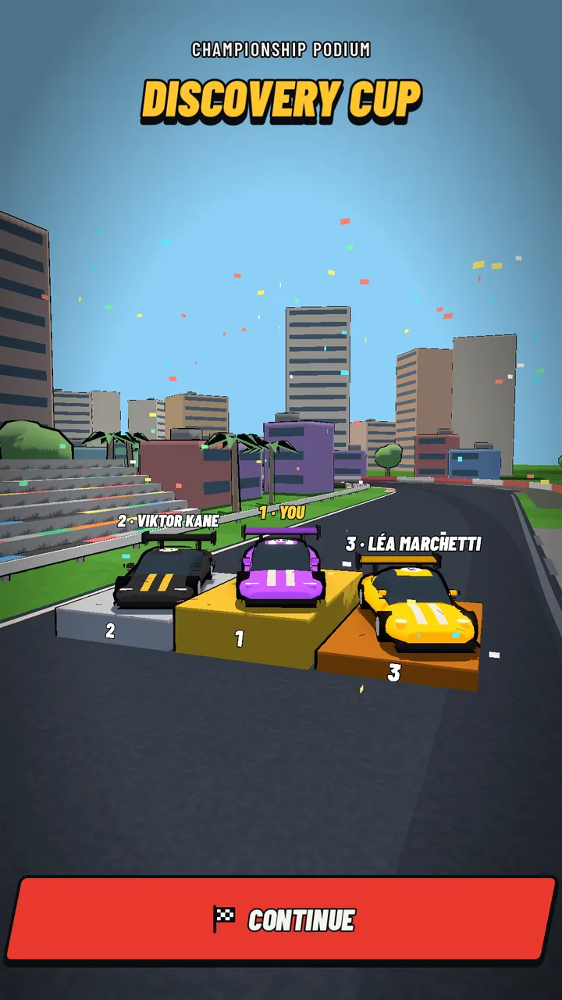
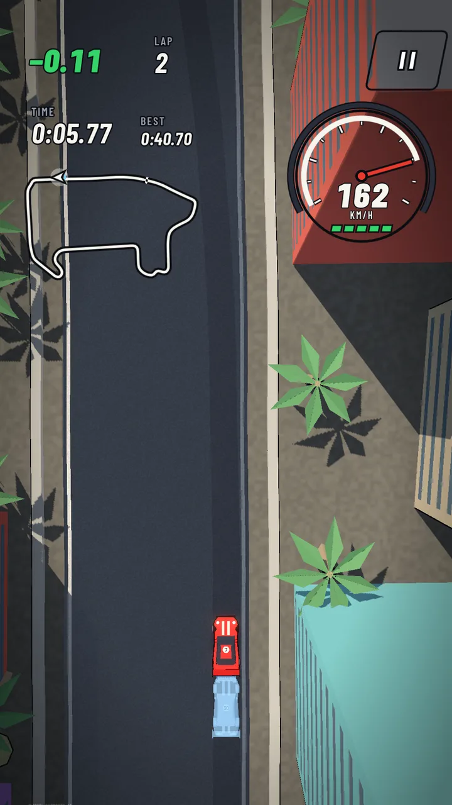
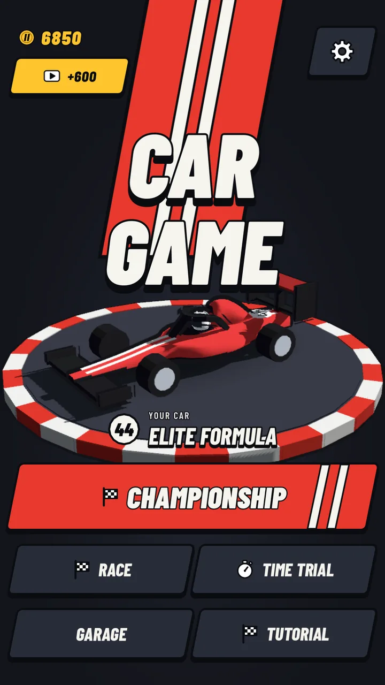
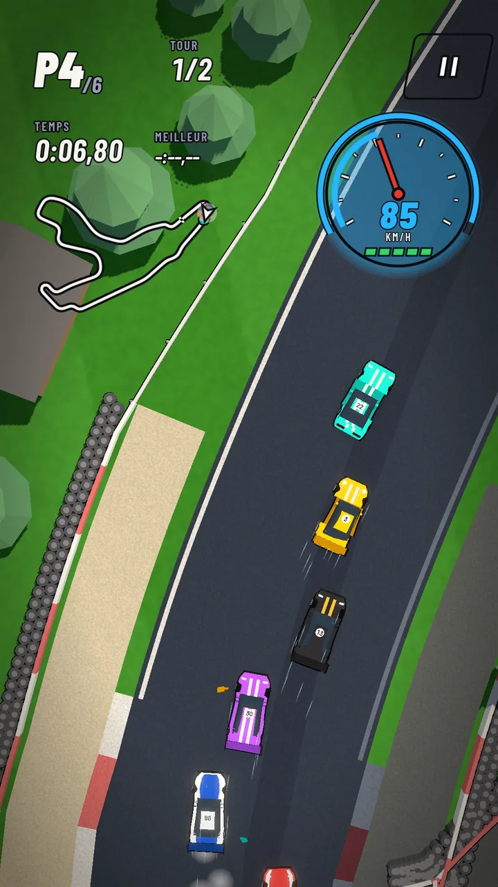
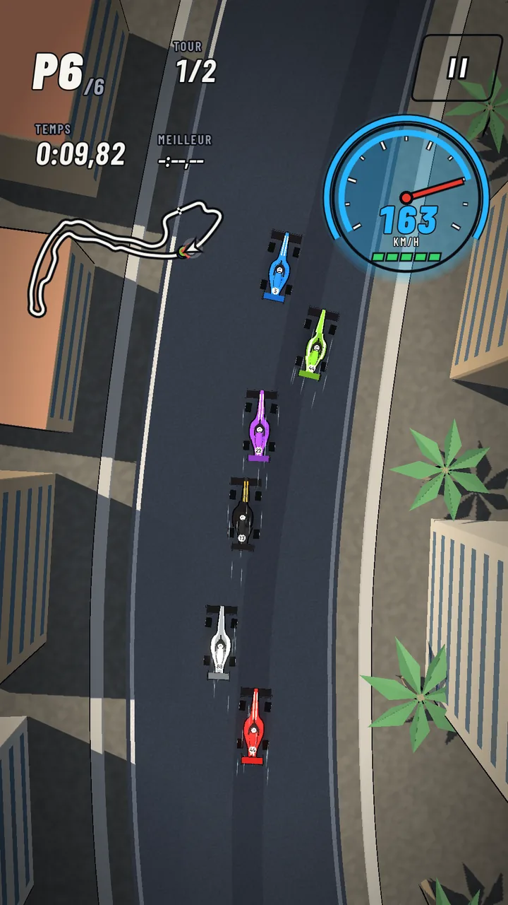
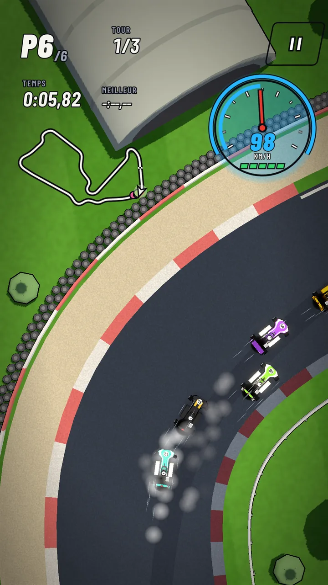
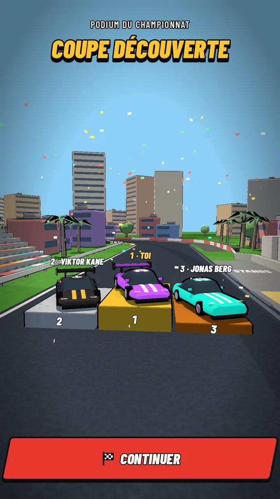
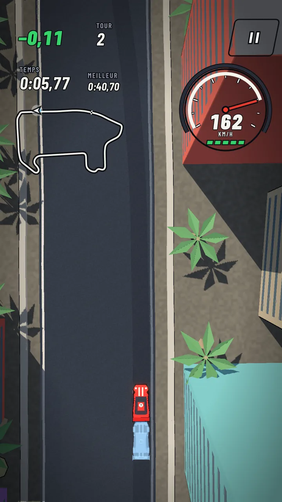
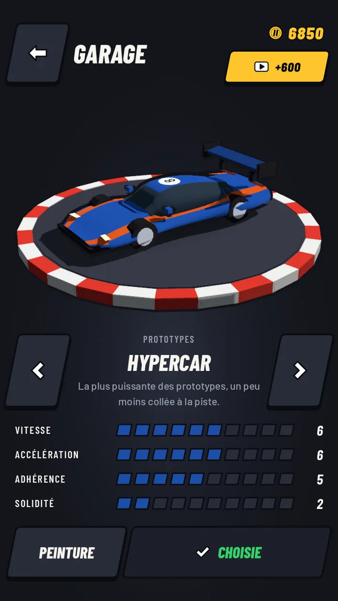
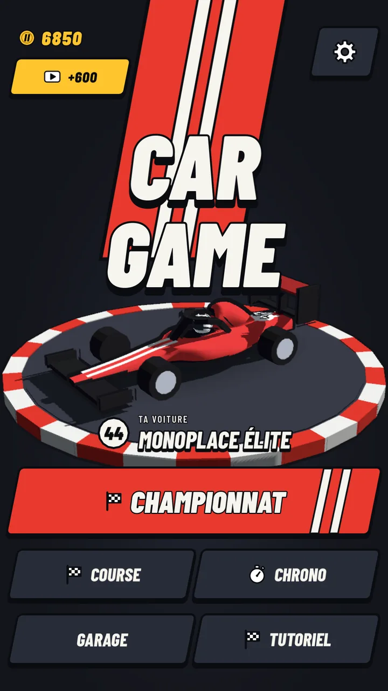
How it plays
Le jeu
One thumb, the right line
Un pouce, la bonne trajectoire
The car accelerates by itself; your thumb steers, anywhere on the screen, relative or absolute as you like. Easy to pick up, and there is always a better line to find, and a car to slipstream and pass.
La voiture accélère toute seule ; ton pouce dirige, n'importe où sur l'écran, en relatif ou en absolu, comme tu préfères. Facile à prendre en main, et il y a toujours une meilleure trajectoire à trouver, et une voiture à aspirer pour la doubler.
Six championships
Six championnats
Three to five races against the same named drivers, including a rival in a black car who is not afraid of contact. Points at every finish, credits for a podium, the cup for the winner, and the podium itself, on the track.
De trois à cinq courses face aux mêmes pilotes, dont un rival en voiture noire qui n'a pas peur du contact. Des points à chaque arrivée, des crédits pour un podium, la coupe pour le vainqueur, et le podium lui-même, sur la piste.
Race craft
L'art de la course
Slipstream behind other cars, then pull out to pass. Knocks leave visible damage: stop at your pit box to repair. In time trial, chase the ghost of your best lap, with the gap live. And a driving school to learn it all, step by step.
L'aspiration derrière les autres voitures, puis tu déboîtes pour doubler. Les chocs laissent des dégâts visibles : arrête-toi à ton stand pour réparer. En contre-la-montre, chasse le fantôme de ton meilleur tour, avec l'écart en direct. Et une auto-école pour tout apprendre, étape par étape.
From karts to single-seaters
Du kart aux monoplaces
Twenty-nine cars in seven categories. You always race against cars of your own category, each with its own character. Credits won in championships buy new cars and circuit packs; every car can be repainted with two colours and a pattern.
Vingt-neuf voitures dans sept catégories. Tu cours toujours contre des voitures de ta catégorie, chacune avec son caractère. Les crédits gagnés en championnat achètent de nouvelles voitures et des packs de circuits ; chaque voiture se repeint avec deux couleurs et un motif.
- Karting3 karts Fun Kart, Sprint Kart, Superkart. Light, nimble, close to the ground. Kart Loisir, Kart Sprint, Superkart. Légers, vifs, au ras du sol.
- Touring4 carsTourisme4 voitures Sedan, Mini, Rally Turbo, Pickup. Tough and forgiving, to start with. Berline, Mini, Rallye Turbo, Pick-up. Solides et indulgentes, pour débuter.
- GT4 cars4 voitures Sprint GT, Muscle GT, GT3 Evo, Cuneo V12. Power, and wings to keep it down. Sprint GT, Muscle GT, GT3 Evo, Cuneo V12. De la puissance, et des ailerons pour la garder au sol.
- Prototypes3 cars3 voitures Barchetta, Proto LM, Hypercar. Endurance racers, fast everywhere. Barchetta, Proto LM, Hypercar. Des voitures d'endurance, rapides partout.
- Junior, Single-seater, EliteSingle-seatersJunior, Monoplace, ÉliteMonoplaces One car each, the same for everyone: only the driver makes the difference. Une voiture chacune, la même pour tous : seul le pilote fait la différence.
Twenty-five circuits
Vingt-cinq circuits
Circuits inspired by the great tracks of the world, each with its own scenery: harbours and city walls, deserts and casinos, forests, lakes, vineyards, airfields and seasides. Play them in quick races, in time trial, or as the six championships, which come as circuit packs.
Des circuits inspirés des grands tracés du monde, chacun avec son décor : ports et remparts, déserts et casinos, forêts, lacs, vignes, aérodromes et bords de mer. À courir en course rapide, en contre-la-montre, ou dans les six championnats, qui sont autant de packs de circuits.
Become a tester
Deviens testeur
Car Game is in closed testing on Google Play before its release. Join the test to play it now and help polish it. Use the same Google account all the way: the one on your Android phone.
Car Game est en test fermé sur Google Play avant sa sortie. Rejoins le test pour y jouer dès maintenant et aider à le peaufiner. Utilise le même compte Google du début à la fin : celui de ton téléphone Android.
-
Join the testers' group
Rejoins le groupe des testeurs
On Google Groups, join adanaps-android-test. The same group opens the tests of every Adanaps game.
Sur Google Groups, rejoins adanaps-android-test. Le même groupe ouvre les tests de tous les jeux Adanaps.
Join the groupRejoindre le groupe -
Accept the test
Accepte le test
On the test page, tap Become a tester. If the page says the test is not available, wait a few minutes after joining the group.
Sur la page du test, touche Devenir testeur. Si la page dit que le test n'est pas disponible, attends quelques minutes après avoir rejoint le groupe.
Join the testRejoindre le test -
Install the game
Installe le jeu
Install it from Google Play, like any app. Updates come by themselves. Your feedback is welcome at contact@adanaps.com.
Installe-le depuis Google Play, comme n'importe quelle appli. Les mises à jour arrivent toutes seules. Tes retours sont les bienvenus à contact@adanaps.com.
Google PlayGoogle Play